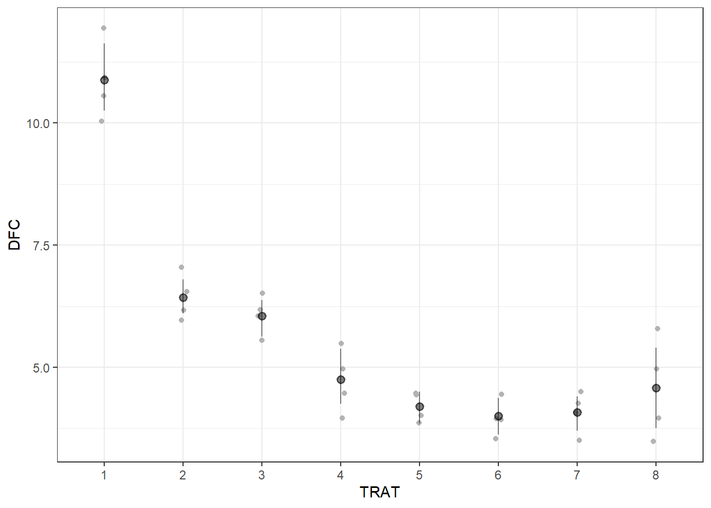

Análise Estatística: Estatística inferencial - Parte 3
Author
Gabriel A D Serafini
ANOVA - DBC
Delineamento em Blocos Casualisados
Hoje iremos trabalhar com Delineamento Blocos Casualisados (DBC)
Para trabalhar com blocos casualizados vamos tratar os Tratamentos e os Blocos como fatores.
library(tidyverse)
── Attaching core tidyverse packages ──────────────────────── tidyverse 2.0.0 ──
✔ dplyr 1.1.4 ✔ readr 2.1.5
✔ forcats 1.0.0 ✔ stringr 1.5.1
✔ ggplot2 3.5.1 ✔ tibble 3.2.1
✔ lubridate 1.9.3 ✔ tidyr 1.3.1
✔ purrr 1.0.2
── Conflicts ────────────────────────────────────────── tidyverse_conflicts() ──
✖ dplyr::filter() masks stats::filter()
✖ dplyr::lag() masks stats::lag()
ℹ Use the conflicted package (<http://conflicted.r-lib.org/>) to force all conflicts to become errors
library(gsheet)soja <-gsheet2tbl("https://docs.google.com/spreadsheets/d/1bq2N19DcZdtax2fQW9OHSGMR0X2__Z9T/edit#gid=866852711")soja <- soja |>mutate(TRAT =as.factor(TRAT),BLOCO =as.factor(BLOCO))
theme_set(theme_bw())
Vamos plotar as os gráficos para observar se há diferença entre os tratamentos. Colocamos a média e o intervalo de confiança, o bootstrap aprende a média e o intervalo de confiança. #FALTOU PLOTAR OS DEMAIS#
dfc <- soja |>ggplot(aes(TRAT, DFC ))+geom_jitter(width =0.05, color ="gray70")+stat_summary(fun.data ="mean_cl_boot", size =0.5, color ="black", alpha =0.5)dfc

fer <- soja |>ggplot(aes(TRAT, FER ))+geom_jitter(width =0.05, color ="gray70")+stat_summary(fun.data ="mean_cl_boot", size =0.5, color ="black", alpha =0.5)fer
prod <- soja |>ggplot(aes(TRAT, PROD ))+geom_jitter(width =0.05, color ="gray70")+stat_summary(fun.data ="mean_cl_boot", size =0.5, color ="black", alpha =0.5)prod
#library(r4pde)library(patchwork)(dfc | fer | prod)
Anova DBC
Mesmo não tendo efeito de bloco, deixa-se pois o experimento foi delineado em Blocos Casualisados.
aov_dfc <-lm(DFC ~ TRAT + BLOCO,data = soja)anova(aov_dfc)
Analysis of Variance Table
Response: DFC
Df Sum Sq Mean Sq F value Pr(>F)
TRAT 7 149.299 21.3284 51.5490 8.218e-12 ***
BLOCO 3 0.461 0.1537 0.3716 0.7743
Residuals 21 8.689 0.4138
---
Signif. codes: 0 '***' 0.001 '**' 0.01 '*' 0.05 '.' 0.1 ' ' 1
library(performance)
Warning: pacote 'performance' foi compilado no R versão 4.4.1
check_heteroscedasticity(aov_dfc)
OK: Error variance appears to be homoscedastic (p = 0.532).
check_normality(aov_dfc)
OK: residuals appear as normally distributed (p = 0.978).
library(emmeans)
Warning: pacote 'emmeans' foi compilado no R versão 4.4.1
Welcome to emmeans.
Caution: You lose important information if you filter this package's results.
See '? untidy'
Warning: pacote 'survival' foi compilado no R versão 4.4.1
Carregando pacotes exigidos: TH.data
Carregando pacotes exigidos: MASS
Warning: pacote 'MASS' foi compilado no R versão 4.4.1
Anexando pacote: 'MASS'
O seguinte objeto é mascarado por 'package:patchwork':
area
O seguinte objeto é mascarado por 'package:dplyr':
select
Anexando pacote: 'TH.data'
O seguinte objeto é mascarado por 'package:MASS':
geyser
cld(medias_dfc, Letters = LETTERS)
TRAT emmean SE df lower.CL upper.CL .group
6 4.00 0.322 21 3.33 4.67 A
7 4.08 0.322 21 3.41 4.74 A
5 4.20 0.322 21 3.53 4.87 A
8 4.58 0.322 21 3.91 5.24 AB
4 4.75 0.322 21 4.08 5.42 AB
3 6.05 0.322 21 5.38 6.72 BC
2 6.42 0.322 21 5.76 7.09 C
1 10.88 0.322 21 10.21 11.54 D
Results are averaged over the levels of: BLOCO
Confidence level used: 0.95
P value adjustment: tukey method for comparing a family of 8 estimates
significance level used: alpha = 0.05
NOTE: If two or more means share the same grouping symbol,
then we cannot show them to be different.
But we also did not show them to be the same.
FERRUGEM
aov_fer <-lm(FER ~ TRAT + BLOCO,data = soja)anova(aov_fer)
Analysis of Variance Table
Response: FER
Df Sum Sq Mean Sq F value Pr(>F)
TRAT 7 978.87 139.838 55.1717 4.218e-12 ***
BLOCO 3 3.84 1.279 0.5045 0.6834
Residuals 21 53.23 2.535
---
Signif. codes: 0 '***' 0.001 '**' 0.01 '*' 0.05 '.' 0.1 ' ' 1
TRAT emmean SE df lower.CL upper.CL .group
6 3.00 0.796 21 1.34 4.66 A
4 3.12 0.796 21 1.47 4.78 A
5 3.25 0.796 21 1.59 4.91 A
7 3.38 0.796 21 1.72 5.03 A
8 3.50 0.796 21 1.84 5.16 A
3 4.00 0.796 21 2.34 5.66 A
2 5.88 0.796 21 4.22 7.53 A
1 20.25 0.796 21 18.59 21.91 B
Results are averaged over the levels of: BLOCO
Confidence level used: 0.95
P value adjustment: tukey method for comparing a family of 8 estimates
significance level used: alpha = 0.05
NOTE: If two or more means share the same grouping symbol,
then we cannot show them to be different.
But we also did not show them to be the same.
Transformação Box-Cox
b <-boxcox(lm(soja$FER ~1))
lambda <- b$x[which.max(b$y)]lambda
[1] -1.555556
soja$FER2 <-(soja$FER ^lambda -1)/lambda
aov_fer2 <-lm(FER2 ~ TRAT + BLOCO,data = soja)anova(aov_fer2)
Analysis of Variance Table
Response: FER2
Df Sum Sq Mean Sq F value Pr(>F)
TRAT 7 0.041641 0.0059488 12.9020 2.436e-06 ***
BLOCO 3 0.005895 0.0019649 4.2616 0.01687 *
Residuals 21 0.009683 0.0004611
---
Signif. codes: 0 '***' 0.001 '**' 0.01 '*' 0.05 '.' 0.1 ' ' 1
TRAT emmean SE df lower.CL upper.CL .group
6 0.523 0.0107 21 0.501 0.545 A
4 0.527 0.0107 21 0.505 0.550 A
5 0.539 0.0107 21 0.517 0.561 A
7 0.545 0.0107 21 0.523 0.567 A
8 0.549 0.0107 21 0.527 0.572 AB
3 0.553 0.0107 21 0.530 0.575 AB
2 0.596 0.0107 21 0.574 0.618 BC
1 0.637 0.0107 21 0.614 0.659 C
Results are averaged over the levels of: BLOCO
Confidence level used: 0.95
P value adjustment: tukey method for comparing a family of 8 estimates
significance level used: alpha = 0.05
NOTE: If two or more means share the same grouping symbol,
then we cannot show them to be different.
But we also did not show them to be the same.
PRODUTIVIDADE
aov_prod <-lm(PROD ~ TRAT + BLOCO,data = soja)anova(aov_prod)
Analysis of Variance Table
Response: PROD
Df Sum Sq Mean Sq F value Pr(>F)
TRAT 7 2993906 427701 2.6367 0.04021 *
BLOCO 3 105665 35222 0.2171 0.88340
Residuals 21 3406431 162211
---
Signif. codes: 0 '***' 0.001 '**' 0.01 '*' 0.05 '.' 0.1 ' ' 1
TRAT emmean SE df lower.CL upper.CL .group
1 4219 201 21 3800 4638 A
2 4935 201 21 4516 5354 AB
8 5078 201 21 4659 5497 AB
3 5110 201 21 4691 5529 AB
5 5122 201 21 4703 5541 AB
7 5128 201 21 4709 5546 AB
4 5140 201 21 4721 5559 AB
6 5256 201 21 4837 5675 B
Results are averaged over the levels of: BLOCO
Confidence level used: 0.95
P value adjustment: tukey method for comparing a family of 8 estimates
significance level used: alpha = 0.05
NOTE: If two or more means share the same grouping symbol,
then we cannot show them to be different.
But we also did not show them to be the same.